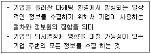
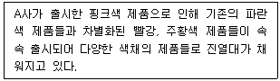
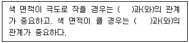
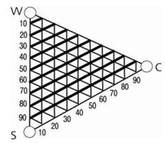

컬러리스트기사 (2021-05-15 기출문제)
1과목: 색채심리 마케팅
1. 소비자의 욕구와 구매 패턴에 대응하기 위한 마케팅 전략의 단계가 옳은 것은?
- 다양화 마케팅 → 대량 마케팅 → 표적 마케팅
- 대량 마케팅 → 다양화 마케팅 → 표적 마케팅
- 표적 마케팅 → 대량 마케팅 → 다양화 마케팅
- 다양화 마케팅 → 표적 마케팅 → 대량 마케팅
(정답률: 91%)

2. 인간의 선행경험에 따라 다른 감각과 교류되는 색채감각을 경험하게 된다. 이에 대한 설명 중 틀린 것은?
- 뉴턴은 분광실험을 통해 발견한 7개 영역의 색과 7음계를 연결시켰으며, 이 중 C음은 청색을 나타낸다.
- 색채와 모양의 추상적 관련성은 요하네스 이텐, 파버비렌, 칸딘스크, 베버와 페흐너에 의해 연구되었다.
- '브로드웨이 부기우기'라는 작품은 시각과 청각의 공감각을 활용하였으며, 색채 언어의 가능성을 보여주었다.
- 20대 여성을 겨냥한 핑크색 스마트 기기의 시각적 촉감을 부드러움이 연상되며, 이와같이 색채와 관련된 공감각을 활용하면 메시지와 의미를 보다 정확하게 전달할 수 있다.
(정답률: 45%)
3. 프랑스의 색채학자 필립 랑클로(Jean Philippe Lenclos)와 관련이 가장 높은 학문은?
- 색채지리학
- 색채인문학
- 색채지역학
- 색채종교학
(정답률: 59%)
4. 일반적으로 '사과는 무슨 색?'하고 묻는 질문에 '빨간색'이라고 답하는 경우처럼, 물체의 표면색에 대해 무의식적으로 결정해서 말하게 되는 색은?
- 항상색
- 무의식색
- 기억색
- 추측색
(정답률: 75%)
5. 색채마케팅에 대한 설명으로 옳지 않은 것은?
- 대중이 특정 색채를 좋아하도록 유도하여 브랜드 또는 제품의 가치를 높이는 것
- 색채의 이미지나 연상 작용을 브랜드와 결합하여 소비를 유도하는 것
- 생산단계에서 색채를 핵심 요소로 하여 제품을 개발하는 것
- 새로운 컬러를 제안하거나 유행색을 창조해나가는 총체적인 활동
(정답률: 38%)
6. 색채 마케팅 전략을 수립하는데 있어서 생활유형(Life Style) 이 대두된 이유가 아닌 것은?
- 물적 충실, 경제적 효용의 중시
- 소비자 마케팅에서 생활자 마케팅으로의 전환
- 기업과 소비자 간의 커뮤니케이션 장애 제거의 필요성
- 새로운 시장 세분화(market segmentation) 기준으로서의 생활유형의 필요
(정답률: 17%)
7. 색채 조사를 위한 표본 추출 방법으로 틀린 것은?
- 대규모 집단에서 소규모 집단을 뽑는다.
- 무작위로 표본추출 한다.
- 편차가 가능한 많이 나는 방식으로 한다.
- 모집단에 대한 정확한 이해가 선행되어야 한다.
(정답률: 86%)
8. 일반적인 포장지 색채로 올바르지 않은 것은?
- 민트(mint)향 초콜릿 - 녹색과 은색의 포장
- 섬세하고 에로틱한 향수 - 난색계열, 흰색, 금색의 포장 용기
- 밀크 초콜릿 - 흰색과 초콜릿색의 포장
- 바삭바삭 씹히는 맛의 초콜릿 - 밝은 핑크와 초콜릿색의 포장
(정답률: 85%)
9. 사회·문화 정보의 색으로서 색채정보의 활용사례가 잘못 연결된 것은?
- 동양 : 신성 시 되는 종교색 - 노랑
- 중국 : 왕권을 대표하는 색 - 노랑
- 북유럽 : 영혼과 자연의 풍요로움 - 녹색
- 서양 : 평화, 진실, 협동 - 하양
(정답률: 34%)
10. 색채 시장조사의 자료수집 방법으로 적합하지 않은 것은?
- 조사연구법
- 패널조사법
- 현장관찰법
- 체크리스트법
(정답률: 67%)
11. 제품 포지셔닝(positioning)에 대한 설명으로 옳은 것은?
- 제품의 품질, 스타일, 성능을 제품의 가격보다도 우선적 으로 고려해야 된다.
- 제품이나 브랜드를 고객의 마음속에 경쟁제품보다 유리한 위치를 점하도록 하는 노력이다.
- 경쟁사의 브랜드가 현재 어떻게 포지셔닝 되어 있는지를 파악할 필요는 없다.
- 제품의 속성 보다는 제품의 이미지를 더 강조해야 유리하다.
(정답률: 78%)
12. 제품 수명주기 중 성장기의 설명으로 틀린 것은?
- 색채 마케팅에 의한 브랜드 이미지 상승
- 시장 점유의 극대화에 노력해야 하는 시기
- 새롭고 차별화된 마케팅 및 광고 전략 필요
- 유사 제품이 등장하면서 시장이 확대되는 시기
(정답률: 45%)
13. 색채의 공감각에 대한 설명 중 틀린 것은?
- 색의 농담과 색조에서 색의 촉감을 느낄 수 있다.
- 소리의 높고 낮음은 색의 명도, 채도에 의해 잘 표현된다.
- 좋은 냄새의 색들은 light tone의 고명도 색상에서 느껴 진다.
- 쓴맛은 순색과 관계가 있고, 채도가 낮은 색에서 느껴진다.
(정답률: 67%)
14. 기업의 마케팅 전략을 수립하는 SWOT 분석과정에 해당되지 않는 것은?
- 기회
- 위협
- 약점
- 경쟁
(정답률: 67%)
15. 색채별 치료효과에서 대머리, 히스테리, 신경질, 불면증, 홍역, 간질, 쇼크, 이질, 심장 두근거림 등을 치료할 때 효과적인 색채는?
- 파랑
- 노랑
- 보라
- 주황
(정답률: 82%)
16. 군집(cluster) 표본추출 과정에 대한 설명이 아닌 것은?
- 모집단을 모두 포괄하는 목록을 가지고 체계적으로 선정 해야 한다.
- 모집단을 하위 집단으로 구획하여 하위 집단을 뽑는다.
- 잠정적 소비계층을 찾기 위해서는 전국적인 소비자 모두가 모집단이 된다.
- 편의가 없는 조사가 되기 위해서는 표본을 무작위로 뽑아야 한다.
(정답률: 57%)
17. 구매의사결정의 설명으로 틀린 것은?
- 소비자의 구매의사결정과정은 욕구의 인식, 정보의 탐색, 대안의 평가, 구매의 결정, 구매 그리고 구매 후 행동의 6단계로 구성된다.
- 구매 결정에 필요한 정보는 우선 내적으로 탐색한 후 부족하다고 판단되면 외적으로 추가 탐색한다.
- 특정 상품 구매는 다른 요인에 의해서도 영향을 받지만 점포의 특징과도 밀접한 관계가 있다.
- 소비자는 구매 후 다른 행동을 옮길 수 있지만 인지 부조화를 느낄 수가 없다.
(정답률: 95%)
18. 다음은 마케팅정보시스템 중 무엇에 관한 설명인가?

- 내부정보시스템
- 고객정보시스템
- 마케팅 의사결정지원 시스템
- 마케팅 인텔리전스 시스템
(정답률: 40%)
19. 시장 세분화 기준 설정 방법이 아닌 것은?
- 지리적 세분화
- 인구 통계학적 세분화
- 심리 분석적 세분화
- 조직특성 세분화
(정답률: 61%)
20. 마케팅의 변천된 개념에 대한 설명이 틀린 것은?
- 제품 지향적 마케팅 : 제품 및 서비스의 생산과 유통을 강조하여 효율성을 개선
- 판매 지향적 마케팅 : 소비자의 구매유도를 통해 판매량을 증가시키기 위한 판매기술의 개선
- 소비자 지향적 마케팅 : 고객의 요구를 이해하고 이에 부응하는 기업의 활동을 통합하여 고객의 욕구 충족
- 사회 지향적 마케팅 : 기업이 인간 지향적인 사고로 사회적 책임을 다하는 것
(정답률: 50%)
2과목: 색채디자인
21. 인간의 피부색을 결정하는 피부 색소가 아닌 것은?
- 붉은색 - 헤모글로빈(hemoglobin)
- 황색 - 카로틴(carotene)
- 갈색 - 멜라닌(melanin)
- 흰색 - 케라틴(keratin)
(정답률: 55%)
22. 제품을 도면에 옮기는 크기와 실제 크기와의 비율은?
- 원도
- 척도
- 사도
- 사진도
(정답률: 87%)
23. 세계화의 지역화가 동시적 가치인식이 되는 시대에서 디자인이 경쟁력을 갖기 위한 방법으로 거리가 먼 것은?
- 지역적 특수가치 개발
- 유기적이고 자생적인 토속적 양식
- 친자연성
- 전통을 배제한 정보시대에 적합한 기술 개발
(정답률: 77%)
24. 환경이나 건축분야에서 토착성을 나타내며, 환경 특성인 지리, 지세, 기후 조건 등에 의해 시간적으로 축적되어 형성된 자연의 색을 뜻하는 것은?
- 관용색
- 풍토색
- 안전색
- 정돈색
(정답률: 88%)
25. 미국을 중심으로 발전된 사조로 묶인 것은?
- 팝아트, 구성주의
- 키치, 다다이즘
- 키치, 아르데코
- 옵아트, 팝아트
(정답률: 78%)
26. 디자인의 기본원리 중 조화(harmony)의 특징에 해당하는 것은?
- 점이
- 균일
- 반복
- 주도
(정답률: 68%)
27. 상품을 선전하고 판매하기 위해 판매현장에서 사용되는 디자인 형태는?
- POP(point of purchase) 디자인
- PG(pictography) 디자인
- HG(holography) 디자인
- TG(typography) 디자인
(정답률: 75%)
28. 유행색의 색채계획에 대한 설명으로 틀린 것은?
- 과거에서 현재까지의 유행색 사이클을 조사한다.
- 현재 시장에서 주요 군을 이루고 있는 색과 각 색의 분포도를 조사한다.
- 전문기관의 데이터베이스를 중심으로 임의의 색을 설정 하여 색의 경향을 결정한다.
- 컬러 코디네이션(Color Coordination)을 통해 결정된 색과 함께 색의 이미지를 통일화 시킨다.
(정답률: 85%)
29. 다음 중 비례에 대한 설명으로 틀린 것은?
- 좋은 비례의 구성은 즐거운 감정을 느끼게 한다.
- 스케일과 비례 모두 상대적인 크기와 양의 개념을 표현 한다.
- 주관적 질서와 실험적 근거가 명확하다.
- 파르테논 신전 등은 비례를 이용한 형태이다.
(정답률: 82%)
30. 색의 심리적 효과 중 한색과 난색의 조절을 통해 주로 느낄 수 있는 것은?
- 개성
- 시각적 온도감
- 능률성
- 영역성
(정답률: 96%)
31. 다음 색채디자인은 제품의 수명 주기 중 어느 단계에 해당되는가?

- 도입기
- 성장기
- 성숙기
- 쇠퇴기
(정답률: 65%)
32. 러시아 구성주의자인 엘 리시츠키의 작품을 일컫는 대표적인 조형언어는?
- 팩투라(factura)
- 아키텍톤(architecton)
- 프라운(proun)
- 릴리프(relief)
(정답률: 19%)
33. 바우하우스(Bauhaus) 교수들이 미국으로 건너와 뉴 바우하우스를 설립한 동기는?
- 학교와 교수들 간의 이견
- 미국의 경제성장을 동경
- 입학생의 감소로 운영의 어려움
- 나치의 탄압과 재정난
(정답률: 75%)
34. 패션 색채계획에 활용한 '소피스티케이티드(sophisticated)' 이미지에 대한 설명이 옳은 것은?
- 고급스럽고 우아하며 품위가 넘치는 클래식한 이미지와 완숙한 여성의 아름다움을 추구
- 현대적인 샤프함과 합리적이면서도 개성이 넘치는 이미 지로 다소 차가운 느낌
- 어른스럽고 도시적이며 세련된 감각을 중요시 여기며 지성과 교양을 겸비한 전문직 여성의 패션스타일을 대표하는 이미지
- 남성정장 이미지를 여성패션에 접목시켜 격조와 품위를 유지하면서도 자립심이 강한 패션 이미지를 추구
(정답률: 43%)
35. 형태구성 부분 간의 상호관계에 있어 반복, 점이, 강조 등의 요소를 사용하여 생명감과 존재감을 나타내는 디자인 원리는?
- 조화
- 균형
- 비례
- 리듬
(정답률: 70%)
36. 색채관리의 순서가 옳은 것은?
- 색의 설정 → 발색 및 착색 → 배색 → 검사
- 배색 → 색의 설정 → 발색 및 착색 → 판매
- 색의 설정 → 발색 및 착색 → 검사 → 판매
- 색의 설정 → 검사 → 발색 및 착색 → 판매
(정답률: 82%)
37. 디자인 사조에 대한 설명 중 틀린 것은?
- 몬드리안을 중심으로 한 데스틸은 빨강, 초록, 노랑으로 근대적인 추상 이미지를 실현하고자 하였다.
- 피카소를 중심으로 한 큐비스트들은 인상파와 야수파의 영향을 받아 색의 대비를 적극적으로 활용하였다.
- 구성주의는 기계 예찬으로 시작하여 미술의 민주화를 주장, 기능적인 것, 실생활에 유용한 것을 요구했다.
- 팝아트는 미국적 물질주의 문화의 반영이며, 근본적 태도에 있어서 당시의 물질문명에 대한 분위기와 연결되어 있다.
(정답률: 19%)
38. 빅터 파파넥(Victor Papanek)의 복합기능(Function Complex) 중 특수한 목적을 달성하기 위한 자연과 사회의 변천작용에 대한 계획적이고 의도적인 실용화를 의미하는 것은?
- 텔레시스(telesis)
- 미학(aesthetics)
- 용도(use)
- 연상(association)
(정답률: 69%)
39. 르 꼬르뷔제의 이론과 그의 사상에서 가장 중요시한 것은?
- 미의 추구와 이론의 바탕을 치수에 관한 모듈(module)에 두었다.
- 근대 기술의 긍정적인 면을 받아들이고, 개성적인 공예가 되어야 한다고 주장하였다.
- 새로운 건축술의 확립과 교육에 전념하여 근대적인 건축 공간의 원리를 세웠다.
- 사진을 이용한 방법으로 새로운 조형의 표현 수단을 제시하였다.
(정답률: 70%)
40. 신문 매체를 활용하는데 있어서의 장점이 아닌 것은?
- 대량의 도달 범위
- 높은 CPM
- 즉시성
- 지역성
(정답률: 48%)
3과목: 색채관리
41. 색채를 발색할 때는 기본이 되는 주색(primary color)에 의해서 색역(color gamut)이 정해진다. 혼색방법에 따른 색역의 변화에 대한 설명 중 틀린 것은?
- 조명광 등의 혼색에서 주색은 좁은 파장 영역의 빛만을 발생하는 색채가 가법혼색의 주색이 된다.
- 가법혼색은 각 주색의 파장영역이 좁으면 좁을수록 색역이 오히려 확장되는 특징이 있다.
- 백색원단이나 바탕소재에 염료나 안료를 배합할수록 전체적인 밝기가 점점 감소하면서 혼색이 된다.
- 감법혼색에서 시안은 파란색 영역의 반사율을, 마젠타는 빨간색 영역의 반사율을 노랑은 녹색 영역의 반사율을 효과적으로 감소시킨다.
(정답률: 40%)
42. 감법 혼색의 경우 가장 넓은 색채영역을 구축할 수 있는 기본색은?
- 녹색, 빨강, 파랑
- 마젠타, 시안, 노랑
- 녹색, 시안, 노랑
- 마젠타, 파랑, 녹색
(정답률: 70%)
43. 디지털 컬러 사진에 대한 설명으로 틀린 것은?
- 이미지 센서의 원본 컬러는 RAW 파일로 저장할 수 있다.
- RAW 이미지는 ISP 처리를 거쳐 저장된다.
- RAW 이미지의 컬러는 10~14비트 수준의 고비트로 저장 된다.
- RAW 이미지의 색역은 가시영역의 크기와 같다.
(정답률: 48%)
44. 천연 진주 또는 진주층과 닮은 외관을 부여하기 위해 사용 하는 진주광택 색료에 대한 설명 중 틀린 것은?
- 진주광택 색료는 투명한 얇은 판의 위와 아래 표면에서의 광선의 간섭에 의하여 색을 드러낸다.
- 물고기의 비늘은 진주광택 색료와 유사한 유기 화합물 간섭 안료의 예이다.
- 진주광택 색료는 굴절률이 낮은 물질을 사용하여야 그 효과를 크게 할 수 있다.
- 진주광택 색료는 조명의 기하조건에 따라 색이 변한다.
(정답률: 73%)
45. 육안조색과 CCM 장비를 이용한 조색의 관계에 대한 설명 으로 옳은 것은?
- 육안조색은 CCM을 이용한 조색보다 더 정확하다.
- CCM 장비를 이용한 조색 시스템에서 가장 중요한 요소는 정확한 색료 데이터베이스 구축이다.
- 육안조색으로도 무조건등색을 실현할 수 있다.
- CCM 장비는 가법 혼합 방식에 기반한 조색에 사용한다.
(정답률: 63%)
46. KS A 0064(색에 관한 용어)에 따른 용어의 설명이 틀린 것은?
- 광원색 : 광원에서 나오는 빛의 색, 광원색은 보통 색자극값으로 표시한다.
- 색역 : 특정 조건에 따라 발색되는 모든 색을 포함하는 색도 좌표도 또는 색공간 내의 영역
- 연색성 : 색필터 또는 기타 흡수 매질의 중첩에 따라 다른 색이 생기는 것
- 색온도 : 완전복사체의 색도와 일치하는 시료복사의 색도표시로, 그 완전복사체의 절대온도로 표시한 것
(정답률: 69%)
47. 채널당 10비트 RGB 모니터의 경우 구현할 수 있는 최대 색은?
- 256×256×256
- 128×128×128
- 1024×1024×1024
- 512×512×512
(정답률: 65%)
48. 광원에 대한 설명으로 틀린 것은?
- 동일한 물체색이 광원에 따라 색이 달라지는 효과를 메타메리즘 이라고 한다.
- 광원의 연색성을 이용하면 보다 효과적인 색채연출이 가능하다.
- 어떤 색채가 매체, 주변 색, 광원, 조도 등이 다른 환경에서 관찰될 때 다르게 보이는 현상을 컬러 어피어런스라고 한다.
- 광원은 각각 고유의 분광특성을 가지고 있어 복사하는 광선이 물체에 닿게 되면 광원에 따라 파장별 분광곡선이 다르게 나타난다.
(정답률: 29%)
49. 표면색의 시감 비교 방법에 대한 설명으로 틀린 것은?
- 일반적인 색 비교를 위해 자연주광 또는 인광주광 어느 것을 사용해도 된다.
- 관찰자는 무채색 계열의 의복을 착용해야 한다.
- 관찰자의 시야 내에는 시험할 시료의 색 외에 진한 표면 색이 있어서는 안된다.
- 인공주광 D65를 이용한 비교 시 특수 연색평가수는 95 이상이어야 한다.
(정답률: 25%)
50. 디지털 색채 시스템에 대한 설명으로 옳은 것은?
- RGB : 빛을 더할수록 밝아지는 감법혼색 체계이다.
- HSB : 색상은 0º에서 360° 단계의 각도값에 의해 표현된다.
- CMYK : 각 색상은 0에서 255까지 256단계로 표현된다.
- Indexed Color : 일반적인 컬러 색상을 픽셀 밝기 정보만 가지고 이미지를 구현한다.
(정답률: 57%)
51. 연색성에 관한 설명 중 옳은 것은?
- 연색성이란 인공의 빛에서 측정한 값을 말한다.
- 연색지수 90 이하인 광원은 연색성이 좋다.
- A 광원의 경우 연색성 지수가 높아도 색역이 좁다.
- 형광등인 B 광원은 연색성은 낮아도 색역을 넓게 표현한다.
(정답률: 43%)
52. 'R(λ)＝S(λ)×B(λ)×W(λ)'는 절대분광반사율의 계산식이다. 각각의 의미가 틀린 것은?
- R(λ)＝시료의 절대분광반사율
- S(λ)＝시료의 측정 시그널
- B(λ)＝흑색표준의 절대분광반사율 값
- W(λ)＝백색표준의 절대분광반사율 값
(정답률: 23%)
53. ICC 프로파일에 포함되어야 할 필수 태그로 틀린 것은?
- copyrightTag
- MatrixColumnTag
- profileDesciptionTag
- mediaWhitePointTag
(정답률: 57%)
54. ICC 기반 색상관리시스템의 구성 요소로 틀린 것은?
- Profile Connection Space
- Color Gamut
- Color Management Module
- Rendering Intent
(정답률: 37%)
55. Isomerism에 대한 설명으로 가장 옳은 것은?
- 어떤 특정 조건의 광원이나 관측자의 시감에 따라 색이 일치하는 것을 말한다.
- 특정한 광원 아래에서는 동일한 색으로 보이나 광원의 분광 분포가 달라지면 다르게 보인다.
- 표준광원 A, 표준광원 D 등으로 분광분포가 서로 다른 광원을 이용하여 평가한다.
- 이론적으로 분광 반사율이 정확하게 일치하는 완전한 물리적 등색을 말한다.
(정답률: 12%)
56. 일반적인 안료와 염료에 대한 설명으로 틀린 것은?
- 안료는 물이나 유지에 용해되지 않는 성질이 있는데 비하여 염료는 물에 용해된다.
- 무기안료와 유기안료의 분류기준은 발색성분에 따른다.
- 유기안료는 무기안료에 비해서 내광성과 내열성이 우수한 장점이 있다.
- 염료는 물 및 대부분의 유기용제에 녹아 섬유에 침투하여 착색되는 유색물질을 일컫는다.
(정답률: 70%)
57. 모니터에서 삼원색의 가법혼색으로 만들어지는 모든 색을 포함하는 색공간 내의 재현 영역을 무엇이라고 하는가?
- 색입체(color solid)
- 스펙트럼 궤적(spectrum locus)
- 완전 복사체 궤적(planckian locus)
- 색영역(color gamut)
(정답률: 86%)
58. 국제조명위원회(CIE) 및 국제도량형위원회(CIPM)에서 채택 하였으며, 밝은 시감에 대한 함수를 V(λ)로 표시하는 것은?
- 분광 시감 효율
- 표준 분광 시감 효율 함수
- 시감 반사율
- 시감 투과율
(정답률: 50%)
59. 물체의 분광 반사율, 분광 투과율 등을 파장의 함수로 측정 하는 계측기는?
- 분광 복사계
- 시감 색채계
- 광전 색채계
- 분광 광도계
(정답률: 69%)
60. 색채 영역과 혼색방법에 관한 설명이 틀린 것은?
- 모니터 화면의 형광체들은 가법혼색의 주색 특징에 따라 선별된 형광체를 사용한다.
- 감법혼색은 각 주색의 파장영역이 좁을수록 색역이 확장 된다.
- 컬러프린터의 발색은 병치혼색과 감법혼색을 같이 활용한 것이다.
- 감법혼색에서 시안(Cyan)은 600nm 이후의 빨간색 영역의 반사율을 효과적으로 감소시킨다.
(정답률: 39%)
4과목: 색채지각론
61. 카메라에 쓰는 UV 필터와 관련이 있는 파장은?
- 적외선
- X－선
- 자외선
- 감마선
(정답률: 58%)
62. 색필터를 통한 혼색실험에 관한 설명 중 틀린 것은?
- 노랑과 마젠타의 이중필터를 통과한 빛은 빨간색으로 보인다.
- 감법혼색과 가법혼색의 연관된 관계를 이해하는데 도움이 된다.
- 필터의 색이 진해지거나 필터의 수가 증가할수록 명도가 낮아진다.
- 노랑 필터는 장파장의 빛을 흡수하고 시안 필터는 단파 장의 빛을 흡수한다.
(정답률: 37%)
63. 가법혼합의 결과에 관한 설명 중 틀린 것은?
- 파랑과 녹색의 혼합 결과는 시안(C)이다.
- 녹색과 빨강의 혼합 결과는 노랑(Y)이다.
- 파랑과 빨강의 혼합 결과는 마젠타(M)이다.
- 파랑과 녹색과 노랑의 혼합 결과는 백색(W)이다.
(정답률: 89%)
64. 다음 ( )에 들어갈 색의 속성을 순서대로 옳게 나열한 것은?

- 명도, 색상
- 색상, 채도
- 채도, 색상
- 명도, 채도
(정답률: 40%)
65. 동일지점에서 두 가지 이상의 색광 또는 반사광이 1초 동안에 40~50회 이상의 속도로 번갈아 발생되면 그 색자극들은 혼색된 상태로 보이게 되는 혼색방법은?
- 동시혼색
- 계시혼색
- 병치혼색
- 감법혼색
(정답률: 59%)
66. 눈에 대한 설명 중 틀린 것은?
- 외부에서 들어오는 빛의 양을 조절하는 구실을 하는 것은 홍채이다.
- 수정체는 빛을 굴절시킴으로써 망막에 선명한 상이 맺도록 한다.
- 망막의 중심부에는 간상체만 있다.
- 빛에 대한 감각은 광수용기 세포의 반응에서 시작된다.
(정답률: 84%)
67. 색채의 운동성에 관한 설명으로 옳은 것은?
- 진출색은 수축색이 되고, 후퇴색은 팽창색이 된다.
- 차가운 색이 따뜻한 색보다 더 진출하는 느낌을 준다.
- 어두운 색이 밝은 색보다 더 진출하는 느낌을 준다.
- 채도가 높은 색이 무채색보다 더 진출하는 느낌을 준다.
(정답률: 79%)
68. 색광의 가법혼색이 적용되는 그라스만(H. Grassmann)의 법칙이 아닌 것은?
- 빨강과 초록을 똑같은 색광으로 혼합하면 양쪽의 빛을 함유한 노란색광이 된다.
- 백색광이나 동일한 색의 빛이 증가하면 명도가 증가하는 현상이다.
- 광량에 대한 채도의 증가를 식으로 나타낸 법칙이다.
- 색광의 가법혼색 즉, 동시·계시·병치혼색의 어느 경우이든 같은 법칙이 적용된다.
(정답률: 32%)
69. 무거운 작업도구를 사용하는 작업장에서 심리적으로 가볍게 느끼도록 하는 색으로 가장 효과적인 것은?
- 고명도, 고채도인 한색계열의 색
- 저명도, 고채도인 난색계열의 색
- 저명도, 저채도인 한색계열의 색
- 고명도, 저채도인 난색계열의 색
(정답률: 45%)
70. 색을 지각하는 요소들의 변화에 의해 지각되는 색도 변하게 된다. 다음 중 변화요인과 관련이 없는 것은?
- 광원의 종류
- 물체의 분광 반사율
- 사람의 시감도
- 물체의 물성
(정답률: 80%)
71. 백화점에서 각각 다른 브랜드의 윗옷과 바지를 골랐다. 매장의 조명 아래에서는 두 색이 일치하여 구매를 하였으나, 백화점 밖에서는 두 색이 매우 틀려 보이는 현상은?
- 조건등색
- 항색성
- 무조건등색
- 색일치
(정답률: 91%)
72. 색의 느낌을 설명한 것으로 틀린 것은?
- 대부분의 사람들이 자연과 연결되어 색을 느낀다.
- 색은 그 밝기와 선명도에 따라 느낌이 달라진다.
- 명도와 채도를 조화시켰을 때 아름답고 편안하다.
- 색은 언제나 아름답고 스트레스를 푸는데 효과적이다.
(정답률: 77%)
73. 색의 잔상에 대한 설명으로 틀린 것은?
- 앞서 주어진 자극의 색이나 밝기, 공간적 배치에 의해 자극을 제거한 후에도 시각적인 상이 보이는 현상이다.
- 양성 잔상은 원래의 자극과 색이나 밝기가 같은 잔상을 말한다.
- 잔상은 원래 자극의 세기, 관찰시간, 크기에 의존하는데 음성 잔상보다 양성 잔상을 흔하게 경험하게 된다.
- 보색 잔상은 색이 선명하지 않고 질감도 달라 하늘색과 같은 면색처럼 지각된다.
(정답률: 43%)
74. 색의 지각과 감정효과에 대한 설명으로 옳은 것은?
- 멀리 보이는 경치는 가까운 경치보다 푸르게 느껴진다.
- 크기와 형태가 같은 물체가 물체색에 따라 진출 또는 후퇴되어 보이는 것에는 채도의 영향이 가장 크다.
- 주황색 원피스가 청록색 원피스보다 더 날씬해 보인다.
- 색의 삼속성 중 감정효과는 주로 명도의 영향을 가장 많이 받는다.
(정답률: 69%)
75. 색채의 지각적 특성이 다른 하나는?
- 빨간 망에 들어 있는 귤은 원래보다 빨갛게 보인다.
- 회색 블라우스에 검정 줄무늬가 있으면 블라우스 색이 어둡게 보인다.
- 파란 원피스에 보라색 리본이 달려 있으면 리본은 원래 보다 붉게 보인다.
- 붉은 벽돌을 쌓은 벽은 회색의 시멘트에 의해 탁하게 보인다.
(정답률: 85%)
76. 병치 혼색과 관련이 있는 색채 지각 특성은?
- 보색대비
- 연변대비
- 동화현상
- 음의잔상
(정답률: 67%)
77. 색채 대비 및 감정 효과에 대한 설명 중에서 틀린 것은?
- 인접한 두 색이 서로 영향을 미쳐서, 채도가 높은 색은 더욱 높아지고 채도가 낮은 색은 더욱 낮아 보이는 현상을 채도대비라 한다.
- 면적대비에서 면적이 작아질수록 색상이 뚜렷하게 나타나게 한다.
- 색채의 온도감은 장파장의 색에서 따뜻함을, 단파장의 색에서 차가움을 느끼게 한다.
- 명도대비는 명도의 차이가 클수록 더욱 뚜렷이 나타나며, 무채색과 유채색에서 모두 나타난다.
(정답률: 70%)
78. 애브니 효과에 대한 설명으로 옳은 것은?
- 파장의 같아도 색의 명도가 변함에 따라 색상이 변화하는 것을 말한다.
- 빛의 강도가 높아질수록 색상이 같아 보이는 위치가 다르다.
- 애브니 효과 현상이 적용되지 않는 577nm의 불변색상도 있다.
- 주변색의 보색이 중심에 있는 색에 겹쳐져 보이는 현상이다.
(정답률: 60%)
79. 동시대비에 대한 설명 중 틀린 것은?
- 색차가 클수록 대비현상은 강해진다.
- 자극과 자극 사이의 거리가 가까울수록 대비현상은 약해 진다.
- 자극을 부여하는 크기가 작을수록 대비의 효과가 커진다.
- 시점을 한 곳에 집중시키려는 색채지각과정에서 일어난다.
(정답률: 68%)
80. 다음 중 색에 관한 설명이 틀린 것은?
- 순색은 무채색의 포함량이 가장 적은 색이다.
- 유채색은 빨강, 노랑과 같은 색으로 명도가 없는 색이다.
- 회색, 검은색은 무채색으로 채도가 없다.
- 색채는 포화도에 따라 유채색과 무채색으로 구분한다.
(정답률: 80%)
5과목: 색채체계론
81. 먼셀 색입체의 특성으로 틀린 것은?
- 색지각의 3속성으로 구별하였다.
- 색상은 둥근 모양의 색상환으로 배치하였다.
- 세로축에는 채도를 둔다.
- 색입체가 되도록 3차원으로 만들어져 있다.
(정답률: 62%)
82. NCS 색삼각형에서 S-C축과 평행한 직선상에 놓인 색들이 의미하는 것은?

- 동일 하양색도(same whiteness)
- 동일 검정색도(same blackness)
- 동일 명도(same lightness)
- 동일 뉘앙스(same nuance)
(정답률: 67%)
83. 1916년에 발표된 오스트발트 색체계의 바탕이 된 색지각설은?
- 하트리지(H. Hartridge)의 다색설
- 영·헬름흘츠(Young·Helmholtz)의 3원색설
- 헤링(E. Hering)의 반대색설
- 돈더스(F. Donders)의 단계설
(정답률: 72%)
84. 파버 비렌(Faber Birren)의 색채조화론에 대한 설명으로 옳은 것은?
- 총 9개의 톤으로 이루어져 있다.
- 각 기준이 되는 톤을 직선으로 연결하면 조화롭다.
- 색상의 변화에 대해서는 다루고 있지 않다.
- 실질적인 업무보다는 이론과 설문조사를 위한 것이다.
(정답률: 78%)
85. 색상을 기준으로 등거리 2색, 3색, 4색, 5색, 6색 등으로 분할하여 배색하는 기법을 설명한 색채학자는?
- 문·스펜서
- 오그덴 루드
- 요하네스 이텐
- 저드
(정답률: 48%)
86. 한국산업표준(KS A 0011)에서 사용하는 '색이름 수식형－기준색 이름'의 연결이 옳은 것은?
- 빨간 - 자주, 주황, 보라
- 초록빛 - 연두, 갈색, 파랑
- 파란 - 연두, 초록, 청록
- 보랏빛 - 하양, 회색, 검정
(정답률: 45%)
87. 혼색계의 설명으로 옳은 것은?
- 대표적으로 먼셀 색체계가 있다.
- 현색계는 색을 혼색계는 색채를 표시하는 색체계이다.
- 심리, 물리적인 빛의 혼합을 실험하는 것에 기초를 둔 것으로 CIE 표준 색체계가 있다.
- 색표에 의해서 물체색의 표준을 정하고 표준색표에 번호나 기호를 붙여서 표시한 체계이다.
(정답률: 54%)
88. CIE L*a*b* 색좌표계에 색을 표기할 때 가장 밝은 노란색에 해당되는 것은?
- L*＝0, a*＝0, b*＝0
- L*＝＋80, a*＝0, b*＝-40
- L*＝＋80, a*＝＋40, b*＝0
- L*＝＋80, a*＝0, b*＝＋40
(정답률: 59%)
89. CIE XYZ 삼자극치의 개념의 기반이 된 색지각의 3원색이 아닌 것은?
- Red
- Green
- Blue
- Yellow
(정답률: 96%)
90. 한국산업표준(KS A 0011)에 의한 물체색의 색이름 중 기본 색명으로만 나열된 것은?
- 빨강, 파랑, 밤색, 남색, 갈색, 분홍
- 노랑, 연두, 갈색, 초록, 검정, 하양
- 회색, 청록, 초록, 감색, 빨강, 노랑
- 빨강, 파랑, 노랑, 주황, 녹색, 연지
(정답률: 75%)
91. Yxy 색체계에서 사람의 시감 차이가 실제 색표계의 차이가 가장 많이 나는 색상은?
- Red
- Yellow
- Green
- Blue
(정답률: 28%)
92. 문·스펜서(P. Moon & D. E. Spencer)의 색채 조화론의 설명으로 틀린 것은?
- 균형 있게 선택된 무채색의 배색은 아름다움을 나타낸다.
- 작은 면적의 강한 색과 큰 면적의 약한 색은 조화롭다.
- 조화에는 동일조화, 유사조화, 면적조화가 있다.
- 색상, 채도를 일정하게 하고 명도만 변화시키는 경우 많은 색상 사용 시 보다 미도가 높다.
(정답률: 39%)
93. DIN 색체계에 대한 설명으로 틀린 것은?
- 24가지 색상으로 구성되어 있다.
- 채도는 0~15까지로 0은 무채색이다.
- 16：6：4와 같이 표기하고, 순서대로 Hue, Darkness, Saturation을 의미한다.
- 등색상면은 흑색점을 정점으로 하는 부채형으로서 한 변은 백색에 가까운 무채색이고, 다른 끝은 순색이다.
(정답률: 56%)
94. 먼셀 기호 5YR 8.5/13에 대한 설명이 옳은 것은?
- 명도는 8.5이다.
- 색상은 붉은 기미의 보라이다.
- 채도는 5/13이다.
- 색상은 YR 8.5이다.
(정답률: 96%)
95. 저드(D. B. Judd)가 요약한 색채조화론의 일반적 공통원리에 포함되지 않는 것은?
- 질서의 원리
- 독창성의 원리
- 유사성의 원리
- 명료성의 원리
(정답률: 78%)
96. NCS 색체계의 색표기 중 동일한 채도선의 m(Constant Saturation) 값이 나머지와 다른 하나는?
- S6010-R90B
- S2040-R90B
- S4030-R90B
- S6020-R90B
(정답률: 32%)
97. P.C.C.S의 특징으로 옳은 것은?
- 최고 채도치가 색상마다 각각 다르다.
- 각 색상 최고 채도치의 명도는 다르다.
- 색상은 영·헬름홀츠의 지각원리와 유사하게 구성되어 있다.
- 유채색은 7개의 톤으로 구성된다.
(정답률: 18%)
98. 먼셀의 색입체를 수직으로 자른 단면의 설명으로 옳은 것은?
- 대칭인 마름모 모양이다.
- 보색관계의 색상면을 볼 수 있다.
- 명도가 높은 어두운 색이 상부에 위치한다.
- 한 개 색상의 명도와 채도 관계를 볼 수 있다.
(정답률: 38%)
99. 다음 중 청록색 계열의 전통색은?
- 훈색(熏色)
- 치자색(梔子色)
- 양람색(洋藍色)
- 육색(肉色)
(정답률: 87%)
100. 세계 각국의 색채표준화 작업을 통해 제시된 색체계와 그 특성을 연결한 것은?
- 혼색계 : CIE의 XYZ 색체계 - 색자극의 표시
- 현색계 : 오스트발트 색체계 - 관용색명 표시
- 혼색계 : 먼셀 색체계 - 색채교육
- 현색계 : NCS 색체계 - 조화색의 선택
(정답률: 40%)